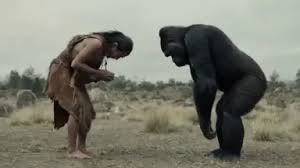

草东没有派对 - 老张
Swordsman
Huddle, huddle, ye children, around the campfire, the only light amongst the vast darkness of our universe – and listen. Young heroes, heed:
The invincible swordsman had shown his blade thrice and lost once.
Yes, you heard me correctly. The swordsman. Indeed, he was not spotted very often, or at all, by the average person in town. Only those lucky and brave, those who ventured outside of tall walls, might have seen him briefly. Deep in a cave, or under a waterfall, they may see a faint grey figure, its eyes squinted against some fixed object in the distance. It is the kind of figure that they wave off and dismiss as a spectre of the eye. It looked no different from the lines that they see at the corner of their eye, and like such lines, once they concentrate on the figure of the swordsman, he disappears, almost as if he was never there to begin with. Therefore, if one attempted to be canonized as a witness by actively looking for the swordsman, their efforts would only be futile. Yet, if one does not seek him and dismisses his figure as a spectre or an illusion, the swordsman will remain where he was, sitting, his legs crossed, squinting at his weapon, neither deterred nor interrupted by those passing behind him. But then, of course, the fact that those who had seen him in such a fashion would not notice him at all naturally prevents them from being canonized, too.
The blacksmith, whose shop was on the east side of town, was the only surviving canonized witness of the swordsman when the hydra struck. He swore, on his expertise, that not only did he witness the swordsman, but he also witnessed the weapon he wielded, which was, to put simply, the slender finger of God himself. According to him, the sword, when swung, was nothing more than a flash, a lightning that cut through anything unfortunate enough to be in its path. The blacksmith said he was only able to witness it once, when the ferocious Nemean lion threatened the safety of the town. A moment before the swordsman sheathed his sword, the blacksmith, or at least so he claimed, was fortunate enough to glance at its natural form: a svelte piece of Damascus steel, folded a thousand times and compressed thereafter, shining in lethal glimmer. One could not imagine it being contained by anything, for it would surely cut through anything it comes into contact with, except for the equally frightening sheath that the swordsman kept at his waist. The sheath was of such black complexion that it seemed as if light avoided it, and – whenever this part of the story is ever told, the blacksmith would always lower his voice, as though fearing someone overhearing – as he sheathes his blade, the swordsman’s hand would turn dark, and then sink into the darkness, like they were one.
It eventually became the consensus among townsfolk that the bulk of the blacksmith’s story was fabricated, and for this, before the hydra struck, the blacksmith had his canonization revoked. Yet, none could deny the fact that, indeed, the Nemean lion was roaring at the gates of the town a while ago, a roar that scared the war hero general so much that he vomited green bile and retreated, without any guards, into his high castle, screaming in agony. Undeniably, too, the roar was cut short by a loud scrape, and the lion's head thumped onto the ground, its eyes and mouth wide open. The hunter retrieved the body, and, before starting to prepare it into a feast, noticed that the wound on the neck was slit in such a clean manner that no blood had been spilled. Out of curiosity, he carefully repositioned the head on its severed neck, and, in horror, saw the wound close on itself, and heard the loud pounding of its heart. The beast came back to life, and, as the hunter told his wife while shivering from fear, had roared louder than the thunder that splits the sky, before dropping dead once more. The hunter, naturally, dared not touch the lion again, and neither did anyone else in town. As such, sadly, the feast was never prepared.
The story about the revival of the Nemean lion woul d have been dismissed as nonsense in the same fashion as the blacksmith’s story, if not for the fact that the entire village was startled by the two roars of the beast, and the fact that, after the beast was slain, many witnessed its head slide off its neck and fall onto the ground, as though they were always meant to be disjoint from the beginning of time.
For this reason, the townsfolk posited, the swordsman must have appeared, and had struck a cut so precise and clean, that the Nemean lion was slain immediately. Perhaps, some even argue, the beast was caught so off guard that its spirit refused to die after its head fell; hence, when the hunter reattached its head and gave it another chance to live, it felt the need to finish the roar that was interrupted by the swordsman’s slash. Yet, no one was present to see the slash itself, at least no one except the blacksmith, who claimed to be hiding in a bush behind the swordsman all along. After he had lost his canonization, others no longer believed him, and it was difficult to blame them for the lack of trust. When asked about the details of how the swordsman had looked, or any details about the person at all, the blacksmith always stuttered, slurred on his words, and contradicted himself. He would then go on to desperately explain that his interests were too heavily drawn by the absolute masterpiece of a sword that the swordsman used, to the extent that he did not pay any attention at all to the swordsman himself. As such-
…What. Why are you talking? Did your parents not tell you not to speak or interrupt when adults are talking? No, never mind now, you’ve already spoken, you might as well finish. Whatever you have to say, it better be good.
‘If the townsfolk did not believe the story of the blacksmith, why was the saviour deemed to be a swordsman?’
Hah! What kind of a question is that? Should I also explain to you why the sky is blue, why the sun is white, and why the day lasts exactly 24 hours? Can’t you read a book for once? Can’t you listen to your pop-pop and mee-maw? Genuinely, how can you not know about the swordsman?! Back in my days, such ignorance would get any child a good spanking…
Hm, I am more learned, you got that right. Fine then… I’ll entertain this. But where should I even begin? I must assume you haven’t heard of that famous tale, either. Agh! Fine, then.
Long before the beginning of this story, long before the birth of me, you, and anyone who may listen to this story, the swordsman had once appeared in and saved the then-ancient town. At least, allegedly so. The accounts were passed down through generations first by word of mouth, which were later painted on bamboo sticks, and then transcribed onto paper, finally being printed into books. Through all these iterations, the tale surrounding the swordsman had inevitably evolved into many versions that conflicted with one another. For instance, some say the swordsman wore luxurious clothing and a crown, like a king; others claim he wore shabby clothing, like a peasant. Some say when he appeared, he saved the town from a boar; others claim he instead slew a dragon. Some say he was talkative and friendly; others claim he was silent and cold. Some say he was paraded around the town after saving it; others claim he disappeared without a trace. One fact, however, persisted through all – the man wore a sheathed sword by his waist, which he used to slay the monster (whatever it might have been) that was terrorizing the town. In every version of the story, the swordsman walked calmly to the town square, perhaps smiling and chatting casually with those fleeing around him, perhaps frowning and looking at the grim tragedy caused by the monster with anger and hatred, perhaps with no expression at all, simply approaching, as though he was going to fetch some groceries. In any case, he eventually stood and faced the monster. The monster, seeing its tiny opponent, would freeze in its action, and, after a long, long time of the two simply staring at each other (the specific period of which remains debated among theologians), the swordsman drew his sword in such a quick manner that the only thing onlookers could see before they were blinded was a brief, bright flash. The flash would illuminate the entire square, outshining everything around it, blocking even sound from propagating. After the onlookers’ vision had recovered, the only thing they could focus on was the head of the monster, which, much like that of the lion, slid off onto the ground. No one, in any of the accounts, dared to claim that they saw the weapon of the swordsman, or the manner in which he slew the monster.
So, although the townsfolk believed the swordsman had slain the Nemean lion, they eventually ceased to believe the story told by the blacksmith. The giveaway, however, was not the lack of details he retold about the swordsman’s brave victory, which the townsfolk did not question at all initially. Instead, it was the claim that the swordsman’s hand turned black and sank into the darkness of the sheath, which now seems so ridiculous that whenever it is brought up, it is always coupled with mocking grins and disbelieving head shakes. To his credit, the mannerisms of the blacksmith when he initially recounted this part of the story were indeed convincing, which persuaded many. Even the church had extended its offer to canonize him and include his account in the Bible, a suggestion he happily accepted alongside the fruits and drinks from his monthly benefits as a canonized witness. But, as he retold the story over and over in the town square, many began to doubt: how can it be possible that the swordsman, a noble hero and saviour, had hands as dark as the sheath? He should bask in nothing but radiance, like angels described in the Bible! How can God allow this imperfection in his most powerful creation? It was only a matter of time before this question began to dwell within the hearts of all the audiences of the blacksmith’s story, and eventually, the question was bound to be posed. In due course, when the blacksmith stood on a pedestal and spoke about his amazing encounter with the swordsman again, his audience no longer looked at him with awe and curiosity; instead, they looked at each other, conversing in silent looks, deciding who should be the one to voice their doubts. Yet, more often than not, none spoke.
The young man who ultimately challenged the blacksmith’s story, so to speak, was a special one. It could even be argued, to one extent or another, that he was destined to be the one to set the story in motion. How so? Well, he wasn’t particularly talented, nor was he extraordinarily brave. However, those qualities are not necessarily considered when fate makes her pick. Let’s say you wanted to go rock skipping. The rock that you would pick would not be the biggest or most beautiful; instead, to make the rock jump the furthest and in an elegant fashion, you would have to select one that is as flat and wide as possible, even if it may look jagged or ugly. In the case of our young man, he was not quite ugly physically; in fact, whenever he walked around town, young ladies, those of his age, often secretly giggled and gossiped amongst themselves about his newest lover, who is, as is every other lover the young man ever had, madly attracted by his beautiful face and kind demeanour. Instead, the young man was ugly in his mind and heart. For this reason, he was detested by all those too old and too wise to be fooled by either his appearances or his antics. To put it simply, the young man was a coward – the worst quality that any person could bear. The fools could be educated, the weak could be trained, even the evil could be saved and turned into a hero if tried hard enough, yet there was no method to help a coward. Cowardice stems from a moral failure, an inability to consider beyond the fragile and short life of oneself, a deficiency so deeply embedded in the individual that to overcome it would mean to fundamentally spell out their destruction. Such was the ugly nature of the young man, such was the nature that made him the jagged and ugly flat rock that will skip the furthest in a pond, and thus, allowed him to be chosen by fate.
Yet, no rock, no matter how flat and jagged, can automatically levitate and propel itself so that it will start skipping – a skilled and powerful hand must set it in action. However, it must be noted that the hand’s part in the rock skipping is inevitable, for as long as the rock and the pond are there, someone is bound to come along and pick up the rock to throw it. Yet, it also remains irrefutable that the rock’s existence would have undergone a significant metamorphosis the moment a hand picks it up. Such an event, for the young man, arrived when he was in bed with his lover. Unsettled by the diction chosen by her parents to describe the man of her dreams, and reassured by the hormones from their intimacy, the young man’s lover decided to end her worries once and for all. So, resting in his satisfaction, the young man felt the girl cuddle tighter under his arm, her breath warm against his neck. How satisfied he was, at that moment, of his immaculate charisma and unparalleled charm! Yet, unfortunately, the girl whispered her worry, and once the words left her bright red lips, her metaphorical, yet powerful and skilled hand reached down next to the pond to pick up the ugly, flat rock that was the young man.
“This is really silly… But my parents said that you shoved your sister out of the way to hide in the cupboard when the lion roared. That’s such a dumb lie, right? These people would do anything to defame you!”
She giggled nervously, waiting for an answer. Yet, as her body shook when she giggled, she missed a tiny detail. A look of shock flashed through the young man’s face before he, as skilled an actor as he had been his whole life, recovered in a matter of milliseconds. As her eyes refocused on her lover’s face, he looked as stoic as ever.
“Of course,” The young man’s voice was calm, even smiling a bit. He hesitated deliberately, and, in a genuine tone of concern, asked: “You don’t really believe them, do you? You know what the seniors think about me.”
“Oh, no, no, of course. It’s all so silly. I’m sure they’ll come around eventually.”
A silent air filled the room. The young man’s mind quickly became full of doubt. After all, he quite liked the current girl, and he would hate to have to go through the trouble to look for a new one. And not to mention, as small as the town is, word spreads fast, and soon, if the girl speaks of his cowardice, no one will want to be with the man who nearly knocked his sister out to save his own skin. To protect his main source of joy, he quickly decided that he must not be seen as the man he truly was, no matter the cost. His mind became filled with determination.
The girl, however, had her mind filled with something entirely different. Knowing her companion all too well, she knew that he could be a deceptively convincing actor (or liar) if he wanted to. She enjoyed it when he used these skills to play tricks on others, or to get her out of sticky situations, yet, for the first time in her life, her mind faltered in its conviction to spend the rest of her life with the young man. Naturally, like all people, the girl wished for her companion to be unconditionally loving and selfless towards her. Certainly, she could not marry someone who would endanger others to save themselves, especially if those being jeopardized were the people he claimed to love most. Further, it would also be nice to prove her parents wrong once and improve the optics of the eventual marriage.
“Though…” She broke the silence carefully, slowly choosing her next words, “I do wonder where you were, then, when the lion attacked. I was really worried about you, and I looked all over the town for you.”
“I…” The young man’s mind raced with candidates for an excuse, “Never mind that, where did you even go to look for me, darling? Didn’t you know it was dangerous outside?” The sweetness in his voice was combined with just the right amount of worry and a slight tinge of blame, a recipe that could fool anyone.
“Aww…” And so the girl fell victim to his façade in an instant, “You’re too sweet. It’s alright, you doll, I just looked within the walls. The lion was outside, right?” She stopped and smiled to wait for him to speak, but he was frozen like a statue. Blinking quickly, her voice hesitated once more: “Though… I did look pretty thoroughly inside the walls. I went everywhere! Even the chapel. But nobody saw you.”
The young man swallowed discreetly at that, and, without much thought, blurted: “Of course! That’s because… I was outside the walls, where all the real warriors were.” He hugged her tighter and looked her directly in the eyes, his heart pounding out of nervousness: “I’d never risk letting the lion hurt you; I would take on the lion and anything that tries to hurt you myself if it meant you could be safe.”
His lover, of course, was ecstatic to hear this: “So you must have seen the swordsman, then?”
“Yes, naturally.” The young man said without hesitation, probably not even understanding what just came out of his own mouth, “I watched him kill the lion with my very eyes.” To add to the credibility of his statement, he supplemented: “Right before the slash, he held his left hand on the sheath with such force that I could practically see the veins pumping out.”
The girl practically jumped with joy at this statement. She recalled, quite clearly, a day earlier, when she saw the blacksmith talking about his story with the swordsman, and how he claimed that the hand of the swordsman melted into the sheath. He’ll prove a canonized witness wrong, and that will show them, she thought. That will show them that he isn’t the kind of person they take him for. If standing face-to-face with the lion to protect me isn’t enough to prove his bravery, if disproving a canonized witness doesn’t show his guts, then there is truly nothing that can sway their prejudice on my darling. And so, in her excitement, she held his hand without a word of explanation, and, despite both of their clothes being crumpled and messy, practically dragged the young man onto the streets. The latter scarcely had a chance to react before he realized that he was in the town square, where the blacksmith was, as always, telling his story to another group of audiences, who scrutinized every detail and listened intently.
“And so,” Said the blacksmith, gradually lowering his voice and glancing around, “I saw his hand reach for his sword, and I held my breath to be the first to witness the masterpiece of a weapon he must possess. But what really haunts me is the sheath. It is a sheath of pure darkness, as though light itself feared what it contained. And his hand… His left hand, turned as dark as the sheath, and melted into-”
A single, sharp laughter pierced the audience, interrupting the blacksmith, who frowned deeply and looked around. The audience was startled, and as a result, turned their heads towards the source of the sound – piles of sweaty scalps and oily hairs moved out of the line of vision of the blacksmith, revealing, at the end, the young man and his lover, the former still confused, and the latter covering her mouth and giggling. It was difficult to tell if she was mocking the blacksmith for his story or if she was laughing out of uncontainable excitement and joy.
“That story of yours is bullshit!” She yelled in between fits of giggles, pointing at the blacksmith, then at the rest of the audience, “And you’re all stupid for buying it!” Her laughing fit finally subsided, and, enjoying the shocked looks of everyone else present, turned towards her lover: “Tell them, darling! Tell them what you saw!”
And so, the rock had been cast. A powerful and skilled wrist flung the rock spinning and flying into action. Although it had neither made its first contact with the pond nor skipped and bounced yet, there was nothing more that the rock could do to change its trajectory. Some may call what happens next a tragedy, or a coincidence, but to me, and frankly, to any wise man, it was an inevitability. A stone cannot skip forever on a pond. It will jump, and jump, and eventually sink.
The first jump of the stone was made when the young man realized that he had no other choice but to maintain his story in front of the entire crowd. The blacksmith’s dark, bright eyes had moved away from the girl and onto him, with curiosity, annoyance, and predominantly anger, enough to drill a hole into him should he not start talking. He swallowed once more.
“Y-yes, indeed. I was outside the walls, watching it all happen.” He appeared to have quickly regained his confidence and spoke in his unique charm, “I didn’t listen to the rest of his speech, but the blacksmith definitely got one thing wrong: the left hand of the swordsman was not black at all. I could clearly see the veins pumping out of the back of his hand as he gripped the sheath.”
For a moment, there was complete silence, and the young man waited, holding his breath, to see if he had sold his story well enough. The next moment, the audience erupted in scattered conversation, turning rapidly into arguments, like a pot of freshly boiling water. The young man was frightened to see that he was surrounded by shouting townsfolk whose faces reddened from the heated arguments.
“…So that’s exactly what I mean!” A voice shouted particularly loudly from behind the young man, “There is no way that the swordsman had dark, stained hands! He is a hero, for God’s sake, he saved us! He should be dressed in nothing less than pure white! I can’t believe you bought this bullshit against the man who saved our lives not once, but twice! Tell me, which hero, or saint, have you seen that has hands darker than the devil? How would God, the almighty, all-knowing, allow such an error-”
An older, calmer voice interrupted: “So, instead of the vivid story from a credible, church-backed witness, you expect me to believe that coward? The same person who left my daughter outside the walls the moment he heard a bear roar?”
“I’m not ‘expecting’ anything, don’t you put words in my mouth! A broken clock is right twice a day, old man, and I’m just glad someone is brave enough to defend our saviour for once! This scandal has gone on long enough as is.”
“It is pretty unbelievable, even if it was true, that the swordsman had hands darker than the devil, I’ll give you that. But for me to believe that cowardly brat?”
An exasperated sigh, and: “Fine, fine. Why don’t we ask him ourselves? He’s right there. Then you can decide whether you’re wrong about him, or he’s lying out his ass again. Either way, it’s much more believable than…”
This particular pair of men was not the only, nor the first, members of the audience to have the idea of extracting more details directly from the young man. However, as many in the crowd, including the blacksmith himself, started looking for the young man, he was nowhere to be found. Unsurprisingly, the moment that the commotion had started, the frightened young man had let his instincts take over and fled the scene. Everyone was too busy arguing with one another to notice that he had discreetly shoved his way through the rest of the audience and run, as fast as his legs could take him, back to his house. Panting and blocking the door with his own body, the cowardly but smart young man had realized his grave mistake. His pupils dilating in fear, he slowly moved away from the door, cold sweat having already trimmed down his back and traced the pattern of his skin onto the door frame.
This is it, he thought, I’ve done it this time. Surely, now, they would…
For the next few days, the young man lived in fear, never setting foot outside his house. The town became unbearably silent for him, and he was convinced that, in an effort to isolate and eventually murder him for his sacrilegious lies, all his neighbours had moved away from him. To put salt on his wound, for whatever reason, his lover had stopped visiting him! Why, he would think in despair, could she, a woman so deeply in love with me, suddenly become willing to endure the lack of my touch for days on end? Why else, if not for the horrible fact that she had bought into the arguments for my cowardice, because she, along with everyone else in town, had already seen through my lies?
And how shall they execute me? What would be a fitting enough punishment for a man who attempted to question the authority of a canonized witness? Would the church think I was questioning them, too? Perhaps they would burn my house down. Perhaps that’s why everyone had moved away from me, so their belongings wouldn’t get caught in the fire. Perhaps it would happen tonight. Perhaps it is already happening!
And so the young man was tortured with such thoughts that he was unable to sleep, unable to eat, and indeed, unable to function properly as a human being for those days. As such, when his lover had opened the door to his house with the key he gave her, causing him to jump into the corner like a terrified cat, she not only giggled out of surprise at his response, but also became shocked at his starved, pale face, his abnormally quickened breaths, and his unshaved beard.
“My dear, what have they done to you!” She ran up to her lover in small, quick steps, putting a basket onto the table. Yet, the young man could not reciprocate her love. Gagging from fear, he retreated into the corner further on all four.
“You… You’re not here to… To… To k-k-kill-” The young man’s sobs broke out of his throat faster than that terrifying word.
His lover hugged him tight, “What are you talking about, darling?” She stared deep into him after kissing his cheek, her eyes teary and confused, “I’d never hurt you! What could have possibly given you that idea?”
The young man blinked in confusion. Shaking and not yet recovered from the illusions that had plagued him for days, he sobbed into her chest: “They… They’re trying to kill me, Maria! They… They’re burning this house down any second now. Oh, help me, help me!”
“Who? Who are they?”
“The church! They had… They had known… Oh God, oh God, help!”
The girl can’t help but giggle a little at the absurdity of the situation. “You must be mistaken.” She said, calming down a bit, patting the back of the young man’s head, “I’m actually sent by them to come here, to canonize you!”
“…What?”
“That’s it! Everyone was in the chapel these days, discussing that brave argument you made against the blacksmith… And it was decided today!” She smiled, taking out a scroll from the basket on the table and unfurling it, pretentiously clearing her throat, “Ahem… It is hereby decreed, on this twentieth day of April, in the one thousand, seven hundred, and seventy fifth year of our Lord, that…”
The young man listened intently. At least, he appeared to be doing so. Inside, he breathed a giant sigh of relief. Whatever this meant, at least she was not here to kill him, and his life was not in any immediate danger. Instantly, his sense of hunger and sleepiness came back to him, and he wanted nothing but to feast and then fall into a deep slumber. But, as smart a man as he was, he knew he had to play his part first.
“That’s great, darling…” His voice was tired, despite his best efforts, “I really thought those ancient priests and pastors weren’t going to trust me. After all, I thought… I thought they didn’t think of me highly at all, and would rather maintain the dignity of… You know, their church and their canonized witnesses. I really… Wow, this is really surprising.”
Glad to see her regular lover returning, the girl said excitedly: “Indeed! I was also shocked when they told me they decided to canonize you as a witness and to withdraw the canonization of the blacksmith. To be honest, I thought they were lying to me to calm me down, until I watched them reverse the canonization on that poor sod myself!” She giggled, undoubtedly from malicious joy, “You should’ve seen the look on his face! Oh God… Ahaha!”
The young man, however, was too tired to share in her joy, “That’s great, dear. I was so scared these past few days… Can you leave me for a while to rest? And… Perhaps…” He looked in the basket, “Do you have something to eat?”
The girl took out a few pieces of cheese and bread, and, after showering him with kisses, left him to rest. When she woke him, the sun had already sunk below the walls, and night was enshrouding the small town. Much more well-nourished and rested, he cleaned himself up and followed her into the chapel. As he rejoiced, secretly, at how well the situation had worked in his favour, and suppressed his victorious grin, the second jump of the stone on the pond had been made. If we had to assign a moment that represented the second jump, it should be the moment that the young man pushed the heavy doors of the chapel open and stepped inside.
The chapel, lined with its countless rows of chairs and tables, had no one to be seen, except the statue of the swordsman at its center. Ironically, although the church had withdrawn the canonization of the blacksmith, the statue made from his description of the swordsman remained. As the couple walked into the chapel, holding hands, they heard shouts from far away. Following the source of the sound, they walked to the back exit of the chapel, towards the courtyard behind. Opening the door magnified the shouts significantly, and the source of it uncovered itself before their eyes immediately: it was a congregation of people, holding torches, pitchforks, knives, sticks, and anything that can skewer a man from head to toe. They were chanting, and one word could be heard:
“Kill! Kill! Kill! Kill!”…
Some in the congregation heard the door being opened by the young man, and, seeing him in the doorway, lowered their heads and became silent. The silence spread like a plague, and soon, the entire crowd stopped shouting, and those nearest the young man moved to both sides without speaking a word, clearing out a path for him to see the blacksmith, tied to a pole, stripped of all his clothes, at the centre of the congregation.
“A reading from the book of Philip, chapter 53, verse 13 to 30.” The priest, standing next to the naked blacksmith, suddenly spoke, “And the third Beast shall decimate Bethlehem, wearing your skin, and speaking with your tongue. It shall spread lies so you cannot think, fool you with its way of words, and make you question the grace of the LORD.”
“Amen,” the crowd said in unison.
“And when the time comes, its neck will lengthen, its true form will be revealed, the evil of all evil, the demon of all demons, the Serpent, the Hydra.”
Someone in the crowd started to sob. It was the girl, the young man’s lover, who began to wipe the tears from her cheeks. I swa- I meant, The young man swallowed, unsure about the situation. Of course, having spent most of his life mingling in the streets with the sole purpose of hedonism, he had not at all read the book of Philip. But it did not take a devout believer nor a saint to piece together the gist of the situation.
“And the Serpent will be slain. Vengeance will be had, vengeance will be enacted by He who has endured the most suffering. This concludes the reading.”
“Amen,” the crowd said in unison.
“I trust you have been read the canonization announcement?” Asked the priest in a stern tone. The young man nodded quickly, his mouth agape.
“We are sorry,” A pastor walked out of the crowd, into the young man’s line of sight, “We interpreted the scripture completely incorrectly. It’s you, you suffered for our misunderstanding! You suffered for the false lies of cowardice! And so, you are the one who shall enact vengeance on the false witness, you shall be the one who saves us, despite being slandered and…” He couldn’t continue. His tears were flowing into his mouth, stopping him from singing praises of the young man, devolving his words into incoherent sobs.
“No! No!” A shriek had broken the silence maintained carefully by the suppressed sobs of the crowd, “You’re all mistaken! The hand- His hand! I saw it, it was dark, it was-” The blacksmith had managed to spit out the gag put in his mouth, screaming for his life.
“Someone silence him!” The same pastor’s face now moulded into hatred and disgust, shouting, “The Serpent is still trying to sway our faith in the LORD, and we shall never let this come to pass! The LORD never makes mistakes, and not in his most powerful creation, the almighty saviour, the swordsman!”
“Never! Never!...” Chanted the crowd, as they pushed the young man forward.
“Please,” Even the priest had now switched to a kinder voice, as he spoke to the young man, who was shoved to the centre of the congregation, “Perform our vengeance.” He unsheathed a short blade from his waist. The blade was dark, carved from obsidian, and, as the young man unconsciously held it in his hands, he noticed it was extraordinarily cold. There was a miracle that the young man once saw a travelling merchant bring into the town when he was still a child, a block of pure coldness, a thing called “ice”. As he put his hands on that block, the young man felt such an unimaginable freeze that he first interpreted it as an extreme blaze. Now, although he knows it to be impossible, the blade feels even colder than the ice he once touched.
“You…” The young man hesitated. What shall I even say? He looked at the earnest crowd, then to the struggling blacksmith, a new gag already secured and put into his mouth. This was going to be me, he thought; I was supposed to be in his place. And if I admit the lie now, I am going to be in his place in a heartbeat.
“We shall listen with our hearts and souls to every word you have to say, witness.” The pastor looks at him with fervour, his hands rubbing in front of him.
“I…” The young man delayed once more, his own heart beating louder than the drums in a marching band. He knew he must choose his words carefully. There was no way he could admit his lie, yet, to kill an innocent man like this… He looked desperately for his lover, who looked at him with equal, if not more, fervour and earnestness compared to the rest of the crowd, an emotion he did not realize he could fear so much until this moment.
“I… I must not do this.” The young man finally decided. Thankfully, his conscience had overtaken him but briefly, forcing him to utter these words. “I shall-”
“So you wish for us to perform thy duty?” The pastor interrupted, and, without the young man even answering, snatched the blade from his hand. In a swift motion, he turned and, with immense velocity, passed the sharp blade through the throat of the blacksmith. The sharpness of the blade could be testified by the fact that the blacksmith was not even able to utter a scream before the blood from his artery burst free, forming a fountain of red.
The crowd cheered. Of course, they cheered. They know nothing. Even the priest likely did not know this, at least not at the time. Had he read the immediate previous verse of the book of Philip, he would have seen the phrase: “Its thirst quenched by the blood of the innocent, the third Beast cometh.”
Oh, what tragedy!... At least, to the average onlooker, such must seem to be the case. How unfortunate that nobody in the crowd noticed the previous verse! Yet, you, my children, will see that this was no tragedy, nor unfortunate coincidence. Naturally, after his throat was slit open, the soul of the blacksmith entered the kingdom of our Lord, and his body slumped to the ground, like a bag of sand. The pastor, with the fresh, hot blood of the blacksmith splattered onto him, halted with the knife still raised high in his hand, as his neck grew, and grew, lengthening vertically upwards, his eyes popped out of their sockets, his mouth twisted into a horrid screech. The crowd quickly went from cheering to silence, and silence to panicked screams. Their screams intertwined with the screech of the pastor, whose neck kept getting longer and longer, until it detached itself from the rest of his body, its head and the elongated neck flung into the air, twisting itself around the neck of the priest. Its victim screamed in horror, but not for long, as his neck, in the same manner as that of the pastor, also extended and detached itself from his body, his head undergoing the same transformation, and the ends of the two necks, the part originally attached to their bodies, twisted together. The two-headed serpent now jumps onto another poor man, and then a woman, and then another man. Each of its victims experienced the same fate, and it only became satiated when it was composed of nine different heads. The head that used to belong to the pastor licked its lips with an abnormally long tongue, twisting its mouth into a crooked smile.
The young man, along with the lucky majority of the crowd that was spared from the carnage, ran back into the chapel, barring the door behind them, and crammed through the front. Behind them, the hydra, now fully formed, cackled in delight, causing more panic within the crowd.
Please, the young man begged deep in his heart while screaming, along with everyone else, please, someone, anyone, help us.
The third, and last jump of the stone on the pond was thus made, and it made its gradual descent to the bottom of the pond. The moment the aforementioned cry for help arose in everyone’s minds, a fog enshrouded the town. Like a mother caressing her crying baby, the fog seemed to calm the screams of the fleeing townsfolk, muffling their screams as it thickened quickly, blocking not only light but also sound. Soon, most things in the town became barely visible. Out of caution of going in loops and feeding themselves to the beast behind them, most people decided to run in the same direction as the rest of the crowd, following the person in front of them. By pure chance, then, the crowd ended up in the middle of the town square, where they looked around in panic and spotted a figure in the distance.
The figure was faint. At first, it was waved off as a spectre of the eye, a product of their imagination. Yet, as it approached the panicked crowd, none could deny that, as faint as it may be, it was no doubt real. Equally real was the hydra, which had approached the town square from the opposite direction, causing the people near it to flee, crying and screaming.
“Come now, no need to run…” The pastor’s head giggled, its voice unrecognizable. The priest’s head continued, using the same voice, “You’re all mine anyway. Now, where should I start?”
It stopped, its smile fading from its face, as it noticed the figure. As the figure walked nearer towards the town square, its outline solidified into one that everyone had already carved into their brain, one that even the patients with the worst cases of dementia in the town could name, one that was placed right in the centre of the town square, in the centre of the chapel, and everywhere else – the swordsman.
“You!” The hydra hissed with a man’s head, snapping its tail to strike the swordsman. His figure wobbled as the tail made contact, hitting nothing but fog, not even slowing him down as he marched towards the town square at the same steady pace.
“You can’t hurt me. You can’t kill me!” Hurling a few more attacks at the man, the priest’s head scowled, “You’re weak! You! You!”
The swordsman answered with silence. His face was hidden by the fog, his expression ambiguous, as he stopped at the entrance of the town square. The crowd had moved to the sides of the square, watching him intently, as he put his hand on the handle of his blade. Instantly, the moment his hand touched his blade, the fog in the town cleared completely, and the swordsman’s figure became absolutely solidified. There he was, standing at the square’s entrance, his form as firm as the statue of him that the townsfolk hid behind.
How shall one describe such a mythical individual? If you asked me, I would say “surprisingly average”. Quite literally, as the swordsman looked neither young nor old, neither short nor tall, neither skinny nor fat, neither kind nor mean. If anything, he looked like the absolute average of every townsfolk in the square. Perhaps the only thing noteworthy about him besides his extraordinarily shabby cape was his hand and the sheath that contained his sword. Sure enough, the blacksmith did not speak a word of lie. His left hand was as black as the sheath, which was so dark that it seemed as though even light avoided it. When he pressed his left hand on the sheath as he prepared to draw, the hand melted into the sheath, and the two became one dark amalgamation.
The attack came in an instant and without warning. Neither any onlooker, nor the hydra itself, was able to react before a flash filled their sight, blinding all. When the townsfolk's visions recovered, they saw all nine heads of the hydra sliding horizontally along the necks before falling off at the exact same time. The swordsman’s weapon remained sheathed, like it had never been drawn, as though the hydra’s heads simply gave up trying to stay intact just from the idea of the swordsman possibly attacking.
The crowd looked in awe, and once their shock had passed through them, they began cheering even more fervently than they did at the death of the blacksmith. Of course, they cheered in such a manner, for just like their cheers a few minutes ago, this new wave of glee was, again, based on the bliss of ignorance. A dark, soft, comforting blanket that puts the loudest infants into a deep slumber, a state of ignorance that permits euphoria no knowledge could ever grant. Yet, the veil was very quickly slit into countless broken pieces, as a distant, coarse voice boomed from the Earth beneath them, through the entire square.
“Fools. Do you take me to be the same as that lion?”
Suddenly, as though materializing with extreme speed, the tail of the hydra appeared and was inches from landing a strike on the swordsman, whose eyes widened slightly, and in an instant, cut the tail into countless pieces no bigger than ashes. The crowd, with its cheers cut short, turned with horror towards the remains of the hydra. The clean wounds on the necks of the hydra, the places that used to be attached to the priest’s, pastor’s, and all other victims’ heads, had completely healed. In the place of the usurped body parts of these poor souls were countless white buds that wriggled and competed against one another, fighting for dominance and space. Each bud struggled against the next, squirming and writhing to squish its identical opponent under itself so as to engulf it and enlarge its own body. The competitions were swift and brutal. Within milliseconds, many buds already rose victorious, turning then against their significantly weaker neighbours. It was only a matter of seconds before, on the stumps of the necks of the hydra, only a few gigantic contestants remained, who, after unsuccessfully attempting to gain ground on one another, split the neck that they shared into multiple strands. Finally, hair, noses, mouths, eye sockets, and everything you would expect on a human head began to populate these buds, shifting around and contorting, making a mockery of the human likeness. The hydra, therefore, was restored to its complete health, if not in arguably better conditions than before, thanks to its additional heads and necks. The only arguable downside of the reformation was the hideousness of the faces, with some having too many facial features, some in the wrong places, and some too few, or none at all.
Every head of the hydra that possessed at least one mouth curved its lips into smiles, and, with a twist of its body, struck. In the blink of an eye, the swordsman stumbled backwards as his opponent retreated its tail. The tip of the tail was tainted red, no doubt from the blood that dripped onto the ground, leaking from the giant hole that appeared on the swordsman’s stomach.
“Only mortal.” The hydra studied its bloody tail, sneering. Yet, contrary to what it had expected, unlike every other victim that it had struck in all its previous manifestations, the swordsman did not fall, nor display any signs of pain. From the darkness of the sheath, he lifted his left hand, gently brushing his broken abdomen. Pink strands, like ground beef, appeared where the hand touched, twisting against each other and filling the void left by the Serpent. The swordsman closed his eyes, blending his left hand within the sheath once more, his body contracting from a deep exhale. Then, he, along with the hydra, vanished.
With modern medicine, we now know that the human eye can capture 60 frames of images per second. A minuscule amount of these frames are disturbed by “saccades”, or the movement of the eye to refocus. These movements would usually cause temporary blurry vision, yet our brains are trained to filter them out so as not to disturb our regular experience. Therefore, when objects move at a speed faster than what is comprehensible to our brain, the blur that they appear in our eyes is interpreted as a result of saccades, and these objects are filtered out, becoming effectively invisible. Hence, the audience could no longer see anything at all relevant to the fight. Neither the swordsman’s blade nor the hydra’s tail was visible, and the sounds of slashing and clashing seemed to be coming from the void.
Of course, the pair attempting to kill each other were no ordinary humans, and as such, were exempt from these natural defects that we suffer from. There was no way to say for certain what thoughts crossed either of their minds in those brief moments. However, from the fact that the hydra ceased its denigrating, one could make the reasonable assumption that the fierce and difficult fight was all that they were able to consider. It was like a chemical equilibrium, where, despite neither side gaining nor losing ground significantly, exchanges and sacrifices were made in attempts to profit from any potential minor mistake by the opponent. Finally, the swordsman discovered such a mistake. For a split second, his figure became visible, his sword shining bright under the noon’s sun, slicing, without difficulty, through all the tails that he had been battling. As his blade went back in its sheath, the carved tails fell silently to the ground. The hydra, losing all methods of attacking, also was forced to a stop, panting, hoping for but a split second to regenerate and keep fighting. Yet the swordsman did not offer it such luxury. Putting one leg before the other, he leapt, and, while still midair, closed his eyes and drew his blade.
A flash, the same flash as before, filled everyone’s vision, only this time much brighter and much more intense. Like the flash told in the legend, this one, too, had blocked out all sound. The nervous chatters among the townsfolk, the panting and shrieking of the hydra, even the sound of the wind blowing, all were smudged into absolute silence. After an eternity of white, the vision of the audience returned along with their hearing, and they saw the swordsman kneeling from exhaustion next to a pile of ash. It only took a moment before they realized that the pile of ash was the terrifying Serpent, with all its heads, tails, hairs, and everything else it possessed being sliced into atoms that regrouped into nothing more than identical particles.
Surely, they thought, there was no way it could regenerate or heal after that kind of damage. And so, they cheered again, even louder than before. Euphoria appeared on everyone’s faces, a relief that they had finally, after all, survived. Every couple embraced each other in delight, every parent hugged their children tight. The young man swung his hands in the air and turned as he looked for his lover. However, before his eyes could find her, they were caught by something much more interesting. A man, his arms still held high, began laughing. Such was not uncommon among the ecstatic crowd, yet his laugh was, for a reason the young man could not quite grasp, chilling to the bone. Perhaps it was the fact that tears fell from his eyes as he laughed, or the fact that his brows twisted into a deep frown. Regardless, he laughed, and laughed, until he doubled over and was too tired to continue. He, then, could only look in horror at his own body as his neck grew longer, at first slowly, then faster, finally practically tearing itself off of him. He was able to scream in horror before his head and elongated neck flew off, drawing the attention of the celebrating crowd. Others who simultaneously suffered from the same conditions did not enjoy such luxury. Their trachea and larynx had been stretched beyond their functional limit before they could react, and as such, all that signified their pain was the expression on their faces when their necks thrusted off their shoulders.
As the crowd’s screams of joy became replaced by equally loud screams of horror, the townsfolk probably realized the crucial fact that I’ve pointed out to you long ago, the fact that the third Beast did not appear because of some unfortunate coincidence, nor was it a stroke of bad luck that caused all the townsfolk to miss the crucial verse in the Book of Philip, but such fate was inescapable so long as we live. Regardless, there was no time for them to dwell on their significant discovery, for the detached heads and necks began swimming towards one another, parting the crowd in their paths. The ends of their necks, similar to the first appearance of the Serpent, twisted together into complex knots, and their eyeballs fell out of their sockets. Wriggling around in its new body, the hydra turned its heads towards the swordsman, who was still kneeling out of exhaustion. Its heads grinned in unison as one of its tails snapped back.
When the town square was built, the contemporary priest decided that it was best to keep some greening around it, so when “humans ultimately conquer the force of nature as God intended”, the townsfolk will still have some souvenirs to commemorate their humble origins. Over the centuries, as trees elsewhere in town were cut down as timber or firewood, these trees remained protected. As such, birds were forced to migrate into these trees around the park, creating a scenic gathering. Now, one such bird was leaping off a branch, likely to find some food to sustain its newly hatched nestlings. As its tiny legs left the branch, its wings flapped to maintain its altitude. As its wings went down, the hydra struck, and before its wings could even begin to come back up again, the hydra’s tail had already penetrated the neck of the swordsman. When the bird’s wings had finally come back up, extended against the wind, the head of the swordsman had launched off in a perfect trajectory. Although the bird witnessed the event transpire, unlike its far more intelligent human peers watching below, it had no idea what the event could have meant. Therefore, it remained silent. The townsfolk, although capable of understanding the death of the swordsman, could not comprehend its sheer magnitude. Therefore, they, too, remained silent, unable to make a sound from the fright.
The silence was only broken when the hydra retracted its tail slowly, and, with a smile that no doubt beamed with victorious joy, licked the blood off its tail. As though stunned by a spell, the crowd did nothing but watch the hydra methodically clean its tail with all its heads and tongues. Finally, after its tail was practically shining, it turned to the crowd.
“Just us left now.”
Four sounds filled the town square. The manic cackling of the hydra was the first to appear, which was quickly overtaken by the screams of the crowd, who quickly came to their senses and dispersed. However, their movements were still far too slow for their predator. The sounds of the nine tails of the hydra slashing and penetrating its victims became clearly audible, along with the messy footsteps of those lucky enough to flee. The young man, entangled within the moving crowd, shouted for his lover.
“Maria! Maria!” Finally, he saw her. Unlike the others, she was standing still against the waves of panicked humans, a buoy amidst a raging storm. “Oh, thank God you’re still alive! Come, let’s go!”
He reached for her hand, panting, but she slapped it away.
“Don’t fucking touch me.” Her voice was cold and quiet. I will never forget that voice, calm against all the panicked cries, and filled with unfamiliar apathy. He had never heard her speak in such a tone, at least not to him. When they talked, her attitude was always nothing short of worshipping, passionate to an extent that would almost creep him out.
“You lied.” She continued, in the same exasperated voice, “I saw his hand. His hand was black. Blacker than the sheath. You lied. They were correct about you all along. I knew-”
“No, Maria, please, not right now, I can explain…” The young man was desperate. He looked back at the slaughter of the hydra, the blood splattering all over the town square, and he almost begged his lover to come to her senses.
“I’m tired of this. You caused this. I caused this. I know you’re too much of a…” Her face flinched at the word, “A coward. Too much of a coward to own up to it. I knew it. I always knew it. I was just… Just too fucking stupid, too weak to admit!” For the first time in a while, her voice became filled with emotion, “They were right! I knew they were! You shoved your sister out of the way to save your skin. Of course you would! And I… I couldn’t…”
“Please, Maria, it’s not your fault. Just…”
The young man attempted to speak earnestly and with his usual charm. However, his lover could not afford to care anymore. Consider bacteria, which, although deadly, can be defeated, and once defeated, the same human would never fall victim to them again. Similarly, the young man’s charm no longer worked on his lover. She did not even bother to interrupt him. In her eyes, all that was left was the carnage that the hydra had left, and the blood that had painted her vision red. The light that filled her eyes, along with any love she had for me, had leaked out of her heart and was replaced by a melancholy unimaginable even to the greatest philosophers. A light breeze passed by, dispersing her long, black hair in a flutter. If the young man could look past her eyes, he would think she looked identical to the girl he found in a bar three months ago. That girl, with her now lifeless eyes, pulled out the obsidian blade that had killed the blacksmith from her waist, his blood still dry on its sharp edge. In the same swift motion that the pastor had swiped it across the innocent man’s neck, she pushed the blade under her chin and leaned into it. Like a soccer ball, her head dropped to the ground, not even making a sound amidst the chaos. It bounced once, twice, and finally rolled to her feet.
The young man froze, and he could only watch as an agonized howl escaped his lips. It would be right for him to feel sad and remorseful. It would be characteristic of him to feel nothing. Yet, if he was being honest, his feelings resided between these two extremes. He could not feel anything that he was able to describe, nor anything akin to sadness, but he also certainly did not feel nothing. His breaths quickened, and it felt, to him, like someone was squeezing his heart and placing it above a fire, allowing it to roast thoroughly. He felt his cheeks were warm and slippery, and only recognized that it was his rolling tears after he had touched them with his shaking hand. Why? He asked himself. She’s just a chick. Just a stupid chick. Not even smart enough to save herself. Not even worth my attention. She’s always been like this, and she’ll never change. I shan’t waste my time or life on her. Yet, as he repeatedly attempted to convince himself, against his wishes, memories of the times she had smiled at him like an idiot or giggled at the most rudimentary things flooded his mind, and his legs gave out, forcing him to kneel before the pool of blood that stained his legs. Therefore, the agonized noises kept spilling from his mouth as he fell to his knees, confused, his head so heavy that he had to hold it up with both his hands. Nothing, he thought in despair, absolutely nothing shall stop these tears from flowing now.
Needless to say, he was mistaken. A wise man in Persia once said that the key to life is to understand “this, too, shall pass”. Much like the passing of the joy and happiness that his lover brought, the sadness that her death caused will, naturally, also cease. As the young man glanced out of his eye, his vision clouded by tears, he saw a figure stand up in the very middle of the bloodbath surrounding the hydra, and for a second, stunned by how lucky one must have been to survive the Serpent's onslaught, his weeping paused.
A second was all the time he needed to see the silhouette dissolve into a dark puddle. Like streams in a river rushing towards a waterfall, the liquid that was once the survivor gushed towards the young man. It surged until it was only inches in front of him, then layer upon layer it solidified, climbing on top of itself to build an outline that was the exact man who had survived the hydra. Well, “survived” was perhaps not the appropriate term. As the last of the dark liquid climbed to the top of the man’s form, it was obvious that the head of the man was missing from his shoulders. However, equally obvious was the particularly shabby cape that went around those same shoulders, and, as you perhaps have already deduced at this point, the young man finally recognized the figure. It was the swordsman, or whatever remained of him. The young man’s jaw dropped, yet the swordsman’s severed body paid no attention to him. It walked slowly towards the body of the young man’s lover, stepping in the pool of blood that had formed under her without care, and picked up her head. As though studying it, the swordsman’s body held it in front of itself for a moment, then carefully placed it upon its own neck. Immediately, the troubled frown that she died with had vanished, replaced by a slight smile. Her long, black hair now covered the shoulders of the swordsman, her facial muscles relaxing, as if she had just arrived home after a long journey abroad. Without opening her eyes, the swordsman grasped the hilt of his blade precisely.
In the distance, the hydra had followed a few unfortunate townsfolk into the alleys, leaving the town square a broken canvas of red. As the victims of the hydra ran through a narrow opening formed by overhanging buildings, lining up perfectly into a single file, the hydra behind them purred quietly in satisfaction. It could already see how its tail would puncture all the delicious chests at once, ripping out the still-beating hearts of these poor, weak humans, and let the resulting blood fountains paint the streets red. It closed all its eyes in anticipation, as it wished to feel the satisfaction of the kill purely on its tail.
Swinging to the side, its tail accelerated. In its rapidness, the soon-to-be victims of the tail practically froze in their place, as their killer swam through the air like an eel. Yes, the hydra thought, yes, almost there. It was practically drooling when its tail finally made contact with something solid. There it is! It almost screamed with delight. Yet, the familiar moist, soft touch of the human heart did not follow; a sharp pain was felt at its tail. The Serpent flinches, retracting its tail, and its eyes open with annoyance.
Blood was dripping to the ground at the location where its tail struck. Yet, the blood did not belong to the Serpent’s victims; it was the Serpent’s blood, dripping off a blade that could only be described to be as sharp and sleek as the finger of God himself. Behind it, the powerful hands and tall figure that held the blade were all too familiar to the hydra.
For a moment, filled with doubt and shock, the hydra froze in place, its nine heads each racing with possibilities and explanations for why that figure could possibly still stand in front of it – a fatal mistake, it turns out, since the moment was enough for the swordsman to slice cleanly through its necks. Of course, the hydra immediately began to regenerate. The disgusting buds that once helped it come back to life again filled the clean cross-section of its neck, pushing against each other, squeezing its neighbours out of existence for a slim chance to be the next heads, to witness and think for themselves, or at least do so at the mercy of the hydra. Besides the sounds of these buds squishing, the only thing audible was the surprised exclamations of those behind the swordsman. At first, people dared to whisper only. After all, it was their own eyes that saw the swordsman’s head fall onto the ground, and it was their own eyes that continued to tell them the hair, head, and everything above the shoulder of the man who stood before them was not at all identical to the hero they saw and worshipped in the chapel. Yet, the artful mincing of the hydra, the sheer power, and the tall figure…
“Look, it’s the swordsman! Dad, it’s the swordsman, he’s here to save us!” So a young boy tugged at his father’s shirt and whispered.
“But… Look at that hair!” Having lost all his air of paternal dignity from the earlier fright, the father answered, his voice shaking slightly, “We must not get our hopes up, boy… God has sent it to punish us, so we must take it with grace… With grace…” Shivering, he could not finish his own sentence.
Such grace, however, did not appear in everyone equally. Quiet whispers soon turned into nervous glances, and it was a foregone conclusion that someone’s curiosity ought to get the better of them sooner or later, pushing them closer to the figure, closer to the regenerating, temporarily pacified Beast, to confirm whether the figure was indeed their familiar saviour.
They say the most curious are often the smartest. Such a theory would sufficiently explain the reaction of the first man to see the swordsman’s new face, as he stumbled backwards, having pieced together the reality he witnessed, thus predicting, accurately, his future. As he gasped, the swordsman’s focus left the body of the hydra briefly, following the staggering man as he turned his head, hence allowing the entire crowd to see his appearance. Like a campfire that was doused by a giant bucket of ice-cold water, the whispers gave way to silence at once, as every knowledgeable mind in the crowd was occupied with the same thought, the thought that was produced by the first man to see the swordsman’s new face, the thought that, no doubt, every man who philosophized properly about death has felt.
Have you ever had the rug pulled out from under your feet? Have you ever stood on a trap door, only for it to open and give way to a bottomless pit, one that you know for certain you shall fall down and potentially die in, and that there’s nothing you can do to avoid such a fate? Perhaps not, but please, just consider such a scenario for a second. The inability, the sense of dread that you must feel in that moment! You would start by blaming yourself for being so stupid as to stand there to begin with, but what if there was nothing you could have done to avoid it? What if, ever since you were born, you were always placed on such a trap door, with no way to escape? What if, the moment that you even realize the trap door’s existence, it immediately opens its tremendous mouth and swallows you whole? If you have thought, with genuineness, about the issue of death, without lying to yourself or sugarcoating it with theories of the “afterlife” or a “soul” independent of your physical form, you would understand this feeling. Why, of course, ever since we are born, we are placed on the trap door of life, and despite our best attempts to crawl away from it, be it with wealth, love, happiness, medicine, or anything else, we are doomed to fall and cease to exist. Just think about it! Ceasing to exist – what a terrifying notion! Not being able to feel, not being able to think, not being able to recollect, not even aware of the fact that you are unable to feel, or think, or recollect, no more than dust, no more than mud… Surely, surely this must be wrong! Shouted each and every man who had reached this logical conclusion of life, be it audibly or in their minds. Surely, life mustn’t be so cruel; there is, there must be something we can do to escape this fate! Yet, nothing can be done. From birth, we have been placed on the trap door, and, like those before us, we, too, cannot escape its gaping mouth despite our best efforts. The moment such a recognition is properly acknowledged, the trap door opens, and the resulting weightlessness pumps the despair straight into our brains. Why, asked every man who had existed, who had the privilege of ever being conscious, who had utilized such a privilege to its most basic extent, why must the universe be so cruel, why must we be doomed by design!
Such was the despair felt by the townsfolk as they saw the face that now sits atop the neck of the swordsman. The face was all too familiar, and, although it was unclear as to whether some of them had already pieced together the entire truth at that moment, the obvious identity of the original owner was disturbing enough to cause them to run. Scrambling and screaming, they found themselves back at the bloodied town square. Red, crimson, and scarlet replaced the green and brown, and countless bodies, with holes in them, without heads, without necks, scattered, screaming in silence. In the middle of the mangled bodies was the young man. He kneeled beside his now headless lover, the obsidian blade still tightly gripped in her hand. And so the trap door underneath the crowd opens, and the exact aforementioned thought crossed all their minds.
The young man lifts his head again, light reflecting unevenly from his gigantic brown eyes. The depths of his retina reflected the smoke rising behind the crowd, the smoke from the battle between the now-regenerated hydra and the swordsman. Neither cared for the architectural genius that was demonstrated by the ancient buildings that once housed the townsfolk, both living and dead, as they tore down wall after wall, window after window, in their desperate attempts to stop the other in their tracks. Swiftly, they moved from one part of the town to the next in battle, forcing all those who had considered themselves safe within their homes to change their mind as their roofs were shredded into pieces. Therefore, the entire surviving population of the town was forced to gather, once again, on the town square, where they all gazed upon the body of the young man’s lover.
None dared to utter a word. None knew what words to utter. What shall one say when the trap door of life opens under their feet, and they are allowed a glimpse at the abyss they must return to? What shall one say when they understand that their existence, the entire point they even began to exist, all the joy of youth, the struggle through education and employment, the love and hate, all that they hold dear and all that they despise, was all just for this moment, just so they could fall and fill the abyss beneath them, to simply lose consciousness and everything they claim to possess? Nothing, nothing except sobs, I suppose, which was exactly what the surviving townsfolk did. Sobs, suppressed, gasping, groaning from the throat, screaming, filled the town square until someone found enough strength to string together a coherent sentence.
“Oh, oh, Lord, oh good Lord above, oh please, please, please…! Not this, not like this, not…”
The sky remained clear. No clouds seemed to appear, no rain dropped. If there was a God, he certainly was not crying, or perhaps even watching the misery, even hearing the desperate prayer of those townsfolk.
“No,” The hunter, whose shop had finally collapsed from the fierce fighting, finally held himself together amidst all the chaos, “No, no, we are misinterpreting the situation. Nobody can say that we are meant to do this; perhaps it is a coincidence – it must be a coincidence!”
As his last words reached everyone’s ears, and as the crowd’s heartbeats slowed since they, like a sinking man grasping at straws, held the hunter’s words with nothing but pure belief, the swordsman, almost blinking into existence, appeared in front of the crowd alongside the Serpent. His long hair waving wildly in the wind resulting from his rapid movements, like a river of black, a river that lived atop a head far too familiar to the townsfolk, their final shreds of hope incurred by the hunter’s words macerated after all.
The parties engaged in battle froze momentarily, the hydra's tails caught on the swordsman’s blade, the latter sliding against the former, and, in an amazing contortion, cuts through the Serpent’s steely skin. His hilt buried deep within the hydra, the swordsman twisted and turned his blade inside the Beast’s body until the hydra's heads were sliced off its necks. Then, with a light flick, all nine heads of the hydra flew simultaneously into the air, and the swordsman sprang up with them, sheathing his blade, closing his eyes, and drew.
After a brief flash, the hydra was reduced to ashes. However, without missing a beat this time, and not even giving the audience a chance to celebrate, nine random onlookers’ hands clasped to their necks at once. Their necks extended and lengthened, their eyeballs leaving their sockets, and, before they could make a sound, their faces escaped their shoulders, leaving their mortal body behind, twisting the ends of their now unnaturally long necks together, regrouping into the hydra. The Beast no longer boasted or flaunted. With exceeding velocity, its tail snapped towards the swordsman, who was still recovering from the previous long and arduous battle. With no means to defend himself, it was now his turn to have his head flicked into the air. Without the signals from his brain, the swordsman’s knees bent, as his legs gave out, his headless body kneeling heavily onto the ground with a thump.
The hydra turned to the petrified crowd. This time, it did not waste time cleaning its tail, nor did it enjoy the fear and despair dwelling within the townsfolk. They know, it thought.
“We know!” An old man exclaimed with a frail and shaky voice, “We know precisely what we shall do.” He paused, breathing heavily, his strength drained completely just by speaking those few words. His younger peers lowered their heads, avoiding his gaze. Empowered by their reluctance, the old man continued loudly, his chest heaving, “Not many years left. If not now, never.”
As though carrying the weight of time on his back, the man walked, his legs shaking, towards the hydra. For some reason that remains incomprehensible, the hydra’s nine heads simply remained focused on him, without any of them even attempting to attack. Had it attempted to strike him down, he would definitely have fallen like a sack of beans. Yet, it simply watched as the old man marched gravely. He stopped a few feet away from the Serpent, next to the kneeling young man and his lover. Slowly, he reached down for the body of the lover of the young man. One by one, he pried her stiff, cold fingers open, removing the obsidian blade from her hand. He looked at the silent crowd once again.
“We know.”
In a motion impossibly sudden for a man his age, he stabbed the blade deep into his trachea, then, before his brain started to die due to the loss of oxygen, dragged it to the right. The weight of his head caused it to lean to the left, a weight that proved unbearable for the tissues and muscles that remained intact on that side of his neck, a weight that caused his head to snap off his neck and roll onto the ground. His decapitated body slumped on top of the girl’s, while his head rolled to a stop next to the young man, causing him to snap out of his misery, falling back onto his hands, crawling away desperately.
Wobble. The figure of the swordsman’s headless body wobbled; it wobbled as it came to its feet; it wobbled as it put one foot before the other, and dissolved into a puddle of black. In an instant, it reformed in front of the old man’s head, picking it up and placing it above its shoulders, much like what it did with the girl’s head. The head’s skin soothed, the wrinkles that resulted from years and years of tension, of frowning and scowling, eased, a slight smile occupying his lips.
It was now that the Beast finally recovered from its mysterious dormancy. It growled and was instantly stuck in a bind against the swordsman’s blade. However, it was far too late, not only because the swordsman had recovered, but because the crowd saw.
The hunter saw. And because he saw, he breathed a giant sigh of relief, closing his eyes. “So, it wasn’t a misinterpretation at all.” He said, defeated.
“I guess it wasn’t, my dear.” His wife said calmly, with slight disappointment, as though they were discussing the price of bread. She saw, too, and she walked up next to him, her arms circled around his waist as she kissed him on the cheek. “But, I guess it’s not terrible, either.”
“Not terrible at all.” The father who consoled his son in the alleyway agreed. He, alongside his son, saw. His son’s eyes were blinking, filled with curiosity.
“What is it, Dad?” He saw, but did not understand.
The father did not answer. Instead, he smiled and patted his son on the head. His son hugged his legs tight in response, his world shrinking to a manageable size, his father’s tall stature supporting its remainder.
The young man saw, too. Yet, because of his cowardly nature, unlike the others who saw, he rejected. “No!” He screamed, still propped on his hands, still leaning back against the ground, “No, there must be another way. There must be!”
A bleak smile appeared on the hunter’s face as he pointed at the hydra, whose nine heads, the heads that used to belong to the neighbours of the young man, the heads that used to spew words of slander, the mouths that used to call the young man a liar and a fraud, now grinned in uniformity as they organized their tails to relentlessly attack the swordsman.
“But, but… That means nothing! That’s, that’s just…” Another voice cried and stuttered, “That just… just… maybe they’re sinners, and they…” It trailed off, struggling to even convince itself. “I won’t do it for some illusion, I won’t, I just won’t!”
“You can’t convince me,” A third voice joined, shaking, “That the LORD created this. He loves us! He would never subject us to such cruelty, such injustice! It is blasphemous to even-”
The hunter interrupted: “Cruelty? Injustice?” His voice, too, was shaking, “Did you mess up your words and mean blessing? See, no matter what evil we have done, we all play an equal role here! I, a sinner with the blood of a thousand animals on my hands, can help too! This, this is the ultimate test.”
His voice trembled from fear, yet a light shone behind his pupils. His wife, who had taken the obsidian blade from the old man’s decollated body, held his hand tight. With his other hand, the hunter took out the cleaver from his bundle. Together, in an amazing unison, they dragged the blades across their throats, their heads falling at their feet.
Afar, the swordsman sliced through the necks of the hydra once more, yet his neck also suffered a fatal blow as he opened himself up to an attack. His body dissolved at once and reformed next to the hunter’s body, picking up his head and placing it on his neck. Concurrently, the necks of a few more townsfolk in the crowd extended and lengthened until they popped out of their shoulders and tied their ends to each other, reforming into the hydra once more.
Like the first of a set of dominoes being knocked over, as soon as the weapon of the swordsman clashed against the hydra’s tails once more, the crowd was set in motion. A commotion immediately arose between a significant portion of the group in the scramble for the obsidian blade, the temporary winner of which promptly inserted it into their own neck, causing their head to roll onto the ground, and the blade again became the target for another scramble. Many others resorted to cheaper methods, as they ran into the ruins of the town, searching for a knife, a cleaver, a cutter, or any sharp object to relieve themselves of the giant tumour on their neck. Before leaning into the sharp edge of their tool of choice, many, of course, screamed or laughed.
“Goodbye!” Said many, crying, screaming, “Farewell!”
“Make good use of this head, it’s costly.” Said another, holding the obsidian blade with a smile. “If you lose, I won’t forgive you.”
“Please,” Begged another, while his wife held a machete that was placed comfortably on his neck, “Please, darling, do it for me.”
The young man froze and could only watch as heads rolled. They must have all lost their minds, he thought. What is even happening? One after the other, his old neighbours dropped like flies, while blood pooled under their bodies. The grief he felt for his lover had been completely replaced by shock as he crawled back onto his feet. He hesitated, he honestly did, about whether he should do the right thing, yet his cowardice triumphed. Insanity, he thought, insanity, no sane person would possibly do such things, and for what?
Therefore, he submitted to his senses, which made him spring to his feet and attempt to flee. If I run fast enough, he thought, maybe the hydra won’t be able to catch me. After all, it’s too busy with the swordsman, and maybe it can’t get me if I’m far enough, maybe it can’t use me to regenerate…
With such thoughts in mind, he scurried towards the gate, away from the battle behind him. In his defence, he wasn’t the only one who had such an idea. A remarkable number of people, although nowhere near the majority of the survivors, followed immediately behind him, gasping for air, scurrying for the exit.
Behind this band of cowards, the battle between the swordsman and the hydra had finally neared its end. Every second, fatal blows were dealt by the hydra against the swordsman, who, at best, could fend off his opponent. It became abundantly clear now that victory had become utterly impossible for the swordsman, as the swordsman merely dissolved every time he made a fatal mistake, materialized next to a head, and continued to fight after placing it on his shoulders. Yet, despite his best efforts, he could not strike down or stagger the hydra even once, not to mention cut it into ashes in the same fashion as before. Too busy to even defend himself, it was, therefore, only a matter of time before the swordsman could not regenerate anymore.
Minutes, or perhaps hours, had passed before the swordsman narrowly defended the attack of the hydra for the last time. The band of cowards had squeezed their way through the front gate of the town and had long left when a tail of the hydra wrapped behind the swordsman, knocking his head off his shoulders. Without another head to use, the swordsman merely staggered and likely fell to his knees, ceasing action forevermore. It was impossible, for our purposes, to tell what happened then, for the young man, arguably the most cowardly of them all, had already covered many miles from the town when the swordsman died, and was sitting on a rock recovering his strength. He certainly hoped for the swordsman to be victorious, but he cared far more about putting more distance between himself and the horrendous Serpent. Having already been separated from the rest of those who had escaped, he would go on to run, as far as possible, away from that cursed place and into the rest of the country, visiting countless cities and towns. He would go on to love, lie, cheat, and run in the same fashion that he had done in his hometown. Girls fawned over him endlessly; his wealth and life were always ensured by his countless supply of lovers everywhere he went. Using merely his charm and charisma, he could talk his way into getting a free meal from a complete stranger and get that same stranger into his bed. Yet, as he lay in bed with these strangers, he could not forget what he ran from. Each time he slept, with a beautiful girl cuddling up to his side, he remembered the eyes of his last lover in his hometown. Each time he woke up, and rays of sunlight hit his face, he could not get out of his head the image of his last lover’s face, bathing in the sun, her eyes hollow and empty, her lips trembling, as she watched the carnage of the Serpent, and as she condemned him for being a coward.
And so these conceptions haunted him, day and night, like a relentless wraith that demanded revenge. Lying with women, or men, no longer satisfied him, as his mind became occupied by nothing except the notion of the eyes of his last lover. Wherefore, after years of increased torture and pain, one night, as he was lying in bed with yet another girl, the angst finally became unbearable.
“Enough!” He shouted out of the blue, “Enough, enough, enough!”
Springing into motion, he jumped out of the bed, putting on his clothes at once. Unravelling his bundle violently, he snatched the ring that his last lover had given him from his bundle and squeezed it on his right hand, as though needing it to survive.
“Darling, what’s wrong?” The girl was startled by this sudden outburst and reached out in an attempt to hold him. As though being touched by something extremely filthy, he slapped her hand away mercilessly.
“I must go.” He said, surprising even himself by the coldness of his tone.
“But where to, darling? It is so late already. And why did you slap me? It hurts, it hurts so much-”
“I must go!” The young man snapped. As though realizing his rudeness, he added quietly, “Forgive me.”
With that, he pushed the room door open and ran off. Never again did the girl see him, as he ran, day and night, according purely to his memory, back to the place where the spectre of his last lover beckoned. Of course, fear and cowardice whispered in his ears and attempted, more than once, to drive him astray. Yet it moved him not, for he had had enough. He must go. He must see for himself the source of this apparition and the result of that fatal battle. If he doesn’t, he will never live another day in peace. Such thoughts occupied his mind as he saw the giant walls guarding his hometown in the distance, and his heart suddenly contorted in a wave of pain and panic. Why did you come back? His cowardice whispered and mocked him louder than ever. You ran away for a purpose. What are you going to fix now?
Shut up, he said to himself.
Pushing open the gates of his hometown proved more difficult than he imagined. The axles on the hinges had long rusted after years of being exposed to the elements, and dust, alongside vines, had built up from within to the extent that they blocked the gates entirely.
The town, despite having its buildings destroyed completely, was more or less the same way they were when the young man fled years ago. The young man only noticed a difference between the town he saw and the one that haunted his memories when he reached the town square.
A gigantic Serpent crashed into the young man’s view, its heads still wiggling around, as though still attempting to free itself. It doesn’t seem to have noticed the young man, for it is far too large to notice something so small. The heads it possessed were human, yet, like pieces of soaked bread, their features had become smudged and twisted out of proportion. Above the Serpent, with a gigantic blade that penetrated the Serpent’s body, pinning it to the ground, was a colossal headless stone statue. Although decapitated, from the cape it wore, the young man easily determined the statue to be the swordsman. In front of the swordsman, holding the many heads of the Serpent, were many other significantly tinier statues of various headless people. The hunter and his wife, the father and his son, the man who begged his wife to kill him, and the wife who granted his wish, all carved out of stone, holding, alone or together, heads of the hydra to the ground. A particularly tall stone statue stood immediately in front of the young man, whom he recognized in an instant – it was his lover! He ran up, tracing her stone-cold body, feeling the dress she had worn when she died. Tears welled in his eyes as he covered his face, and sobs escaped his lips as he shielded his mouth. Pain, unbearable pain, the same pain he had felt years ago when his lover died in front of his very eyes during that bloodied day, returned to him, scratching and jabbing him like a naughty child, forcing screams of agony out of his throat.
He screamed in confession of his love. He cried through tears how much he regretted what he did, and how much he owed her his life. He begged and begged for her to come back to life, to look at him even once. Alas, statues, especially headless statues, are not known to be good at hearing. As such, he begged and begged, cried and cried, confessed and apologized with no end, his tears dripping down the stone dress of his lover, brushing against her stone skin, yet she did not move a muscle.
After what could only have been hours of screaming and weeping, his tears seemed to have run dry, his throat sore. He looked up at the even cut surface on the neck of his lover, sobbing as he caressed it carefully, as though to ease her pain. It was cold to the touch, like the obsidian blade he held before the blacksmith died, like the ice he held as a child. The coldness stung him, and, for the first time in his life, purged him of his most critical condition. For the first time in his life, a strong desire arose in him, a mysterious desire to finally do the right thing.
“Maria,” I whisp- I meant, he whispered, which was almost inaudible compared to the loud struggles of the Serpent, “Maria, I understand now. I understand…”
He understood that it was time to do what he always should have done. He understood that, besides doing what he always should have done, there is nothing else that he should, or could, do.
Oh, please don’t worry, I merely misspoke. I meant to say “he” to begin with. You know, telling entire stories like this could get tiring, and mixing up your pronouns is quite inevitable-
… What do you mean, “not the first time?” Well, I guess in that case, I was just too focused on the story, to the point that I… Well, I mixed up some… Terms. It is only natural. Sorry, where was I? Right. He understood-
What now? Did something get on my hand? Why do you keep staring? Nothing is interesting here; focus on the story. As I was saying…
The ring? What ri-
……
Even in death, she hates it when I lie. Hah. Oh, Maria… Even now? Well, I should’ve… Well. She’s always like this. Of course. Of course…
I’ll do what she wishes, then, for the first time. No more… No more of…
…
Of course, after crying for hours, he-… I… still had to leave. Well, parting with Maria was quite painful, but my heart was already numbed by all the pain from the hours of crying, from my dried-up tears; in comparison, leaving a stone statue behind was not terribly awful. Leaving Bethlehem, then, I wandered the country. From city to city I travelled, and from town to town I warned about the Serpent. To my surprise, although the church did not seem to exist, or at least hold any power, outside of Bethlehem, everyone knew of the swordsman regardless. Someone, then, I thought, must be willing to finish his job for him. Someone must be willing to help me to meet Maria. Yet, upon hearing the name of the Serpent, I am shunned, cast away, or left behind. I failed to imagine the reason at first, but then I understood: it was impossible to ask those with the Serpent inside them to kill another of their own. It seemed, therefore, that the rest of the band of cowards that fled Bethlehem with me had lived far more fruitful lives than I. They mated, gave birth to children, and planted the Serpent inside them, so that when the Serpent inevitably escapes, their children, instead of themselves, would have their necks lengthen and their eyes pop out of their sockets to become the new Serpent, so that they would have a chance to escape and continue living. Their children, of course, did not wish to turn into the Serpent either, so they planted the Serpent in all their neighbours, so their neighbours would turn into the Serpent before themselves. In such a fashion, entire cities and towns became plagued with the Serpent, and because of their sin, none wished to even bring up the history of the hydra. Maria would have called them cowards in a tone even more spiteful than when she called me one.
It was years before I finally encountered a town untainted by the Serpent. I must have travelled, what, thousands of miles now away from Bethlehem, before I encountered such a town, before I encountered you, young heroes. I must, then, make a humble request. Forgive me for doing so after deceiving you about my part in the story, but now that you have figured it out, I must request you to do the inevitable on my behalf. Still, after so many years, I am not an ounce braver.
Cut off my head. I beg of you.
No, no, I insist. I insist. Please. Do it for the greater good.
Please. Do it for me. Do it for Maria, or for my love of her. Please.
…Thank you. Thank you. Thank you. I am eternally, for as long as my consciousness remains, grateful for your help. Thank you.
Your town is extremely adorable, by the way. I wish I had lived here longer before all this. I wish I had gotten here earlier or just waited before telling you this story. If it is not too much to ask, please bury my head and body separately behind the cherry tree on the hill to the east. It would be fitting, I feel, and I would be extremely happy to play a part, even just as fuel, in the growth of such a magnificent sight. I can only imagine the pedals in autumn, drifting and falling, dancing in the wind…
Anyways, thank you for listening to my story. I apologize again for the lie. Well, then, whenever you’re ready-
What? Why do I smile?
Oh. Ha. Hahaha. Ahahahahaha! Why, I smile because of how unfair life is! Look, what a coward I have been, for the entirety of my life, perhaps except for now! I have done less than the bare minimum, lied, cheated, hurt countless people just to save my own skin, and now I get the easy way out. How unfair life is, and how fortunate I am that it is done this way. If there is a God, he must love me in particular.
Ah, the “easy way out”. Of course. I get the easy way out because I must not be the one to kill the hydra. Even if my efforts prove to be useful and successful, it would simply take my head. It must be you. It must be someone untainted by its vice and sin. Now that you know of this story, the responsibility inevitably falls on your shoulders. You’ll struggle and fight, you’ll get hurt, and you’ll certainly lose many things that you hold dear, dearer than perhaps your own life. And that is far more painful than simply dying from decapitation. Compared to you, my death will be almost heavenly.
There is nothing more that I wish to say. I am a dirty man. A coward, and, like I said, cowardice cannot be helped; it is a moral failure. Even if no Serpent lived within me, it would be best that the Earth be cleansed of people such as I. Killing a part of the hydra is just a bonus. Now, then, if you will, please…
Another question? Sure. I am in no rush.
“How can we win”? Fair. Fair question. Well, sure. I see where you’re coming from, at least. That monster is difficult to conquer, to say the least, even for him, and – Ha! You don’t even have him behind you. Talk about impossible! I know what’s going on in your little heads: if he can’t even do it…
No, stop, shut up. Here, feel my neck with your blade. Feel my heart. Yes, point it against me, lay the sharp edge against my skin, feel my veins pumping out of fear. This, this is a part of the monster. This is it screaming, begging for your mercy, like how all my people screamed and begged for its mercy. All parts of these, scattered around the world, make up the monster as a whole. If you can destroy this piece, you can destroy the next, and the next, until it screams and perishes in its entirety. The monster is finite, and finite things must reach their end, be it me, you, or a biblical Beast. Yes, the Serpent is fast. Yes, the Serpent is strong. Yes, even he perished to its tails and whims, but what does it matter? Look, look beneath your blade! It is so vulnerable, so weak, no better than you! So lift your heads up, young heroes, you will slay the hydra here and now!
…
Do what you must.
… Ave Maria…
-2026.1.29, Waterloo, ON, Tony Su
Afterword (or spillover rant by the author)
“So, I like life, and I also like righteousness. If I cannot keep the two together, I will let life go, and choose righteousness.” -Mencius
microcosm (n.), a little world. Definition provided by Merriam-Webster.
This story is a microcosm of human history. And so, it is a story about hope. Lu Xun (actually, Sandor Petofi, Lu just quoted him) wrote “[hope] is a prostitute: she will seduce everyone, to give her everything. She will wait until you’ve sacrificed countless treasures – your youth – and she will throw you out”. Save for the misogyny, I believe this. There is no hope without change, yet how tiny we seem in the face of the issues we must solve to actualize our hope! As the souls and screams of the downtrodden push us from behind, the prostitute (forgive me) of hope lures us forth with its beautiful song, the lyrics of which demand that we all give our lives with no return! Oh, how ridiculous. Why won’t we lull ourselves to sleep instead? After all, we’re still breathing, aren’t we? So why not go to sleep and ignore all this?
Hope is fragile. It is a delicate thing handed down to the most uncaring and untalented hands, demands all, and destroys itself when it is slightly unsatisfied. This story took months to write, but most of it was under his supervision. I look up, and I see him, young and hopeful, as though he is still here with us, as though he is ready to fight and sacrifice again. Are you ready to give everything up? He asks me. Are you finally ready to do the right thing? He demands. History moves forward, and it’s your turn to push its progress!
Yet, I cannot help but think of the hope that he once held, and how he, like all others before him, saw it die, despite his best efforts. “And the battle is going again, and the heart’s uneasy in the chest! Believe us, fathers, new warriors will rise!” Who, me? I am to do what he couldn’t?
In a novel written by Shi Tiesheng, a wheelchair-bound Chinese author, the soul of Adam possessed a cancer patient, and they watched a documentary together, in which an old bull was continuously attacked by a herd of wolves. As he eventually died from exhaustion, and the predators feasted on his carcass, his child, a young calf that he hid under him, escaped. The cancer patient cried about the tragic death of the bull, yet the soul of Adam held a more optimistic opinion – after all, the calf did escape, and so there was hope. However, from the calf’s point of view, how difficult it must be to live! To justify its existence, it must outperform its father and achieve feats that make its survival worthy. What if the calf is genetically defective and is bound to live a short life? What if the calf is unintelligent or runs extremely slowly? If its father could not fend off against the wolves, how can the calf, someone that was only able to survive thanks to the sacrifice made by its father, be expected to do so?
If the swordsman cannot defeat the hydra…
Yet, we must try. We have a moral obligation to try. We must try, even if it means holding our necks out and being slaughtered, or being punctured by the hydra, before we can attack. I wrote this story in second person for this precise reason. It is a message to you, yes, you, reading this story—you and I. We are the only ones left, for all we know, for all we care about. If we do not start fighting, if we do not argue, agitate, shout, and take bullets, then we will take any possibility of containing the hydra, not to mention killing it, to our graves. We must suffer. We must die! Il faut mourir, frères, il faut mourir! Allons, misère, à tes rangs, bas les armes!
You might consider yourself untalented. I certainly consider myself as such. I am no material for a hero, nor a good man. I am the material for a slightly worse-than-average man, living in a comfortable home, perhaps raising a family. If the world demands a great man, all 8 billion other people on Earth ought to have disappeared for it to even consider me. Yet, as the hydra slaughters in the town square, there is no time to decide whether this or that head is slightly better for the swordsman. Any head shall do. A coward’s head, as it turns out, is made of the exact same stuff as a great man’s. So if I die, may I die with my head held up very high, even if it was to be placed on another man’s shoulders.
And so the prostitute (forgive me, again) of hope sings. And so we give her exactly what she wants, because there is nothing else we can do, because there is nothing else we ought to do.
How unfortunate we are. Yet, how very fortunate we are.
Art Credit: BiliBili
Click Me for Document Download as .docx File